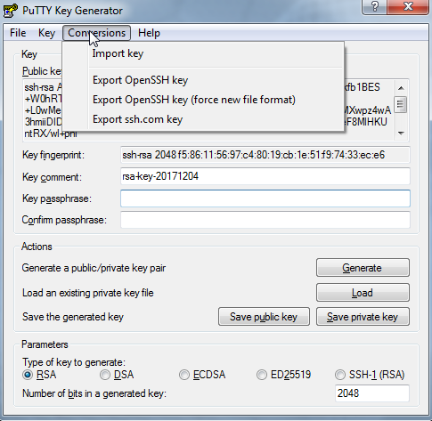

利用Putty生成SSH公钥私钥
Mon 04 December 2017
装完git，居然没有ssh-keygen命令。无奈只好求助于putty，下载putty整个免安装的压缩包，里面有个PUTTYGEN.EXE工具可用于生成SSH的公钥和私钥

-
打开以后点击Generate

-
鼠标在空白区域内划啊划，直到进度条满了（puttygen会采集鼠标划过的位置生成随机数）

-
ssh公钥私钥已经生成，可使用Save public key 和 Save private key按钮保存ppk格式的公钥和私钥文件

-
如果要产生OpenSSH格式的私钥，只需点击Conversions菜单下面的Export OpenSSH key即可。而对应OpenSSH格式的公钥在窗口界面直接复制即可
 -
将公钥上传到github文章，将ssh文件重命名为id_rsa的私钥放到C:\Users\username.ssh目录下即可
Tip:windows下直接创建以.开头的文件或者目录会报错，在后面再跟一个.就可以了。比如 .ssh.